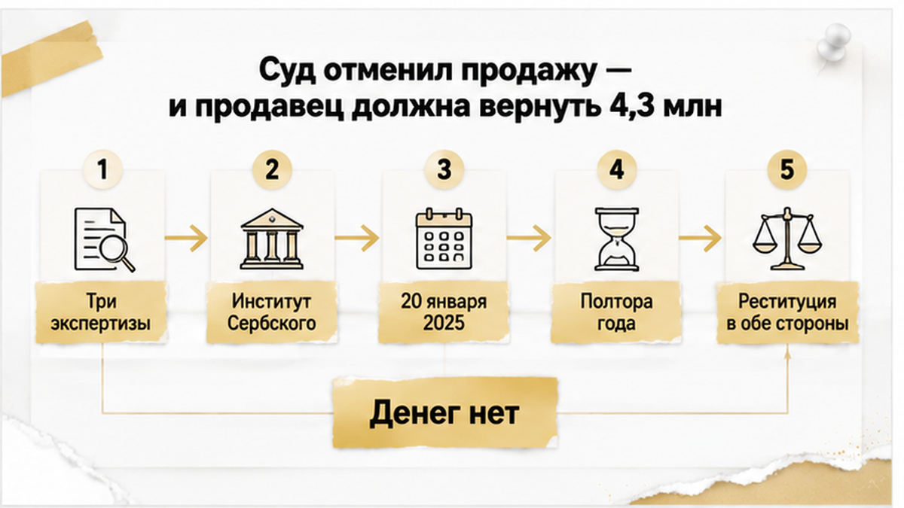

Квартиру в Тюмени продали летом 2023 года — обычная вторичка, собственник на месте, деньги на счёт, ключи новым хозяевам. Через полтора года Ленинский районный суд Тюмени сказал: сделки не было. Продавец — пенсионерка семидесяти лет, которую всё это время вели по телефону: «вашим счетам угрожает опасность», «действуйте быстро», «никому не говорите». Квартиру суд вернул ей — и тем же решением обязал вернуть покупателям 4,3 миллиона рублей, которых у неё нет с того самого лета. Покупатели к этому моменту успели сменить замки, обжиться и распланировать ремонт: теперь у них на руках решение в свою пользу и ноль напротив суммы.
Я — Святослав Шакин, The Риэлтор в Тюмени. Разбираю такие сделки по документам и по поведению сторон — до аванса, а не после суда.
Полный разбор кейсов и как я это ловлю до аванса — в Telegram и MAX.
История начинается не с квартиры, а с переезда. Татьяна Назарова продала жильё в Новом Уренгое и перебралась в Тюмень — на юг, поближе к нормальной зиме, как делают тысячи северян. А потом был звонок.
Сценарий до зевоты знакомый. «Сотрудник безопасности», угроза счетам, срочность, требование никому не рассказывать — ни детям, ни соседям, ни риэлтору. Люди на другом конце провода не спешат. Они работают месяцами и снимают деньги слоями: сначала то, что лежит, потом то, что можно продать.
Сначала ушли деньги от северной квартиры. Потом дошла очередь до тюменской. Летом 2023 года пенсионерка выставила жильё, спокойно провела показы, спокойно вышла на сделку — и перевела всю сумму тем, кто её вёл. Общий счёт потерь по делу — около 12 миллионов рублей.
Теперь самое неудобное. Формально сделка выглядела чище многих. Собственник — она сама. Никаких доверенностей, никакого «продаёт брат по бумажке», никаких наследников из другого города. Она пришла, она подписала, деньги пришли на её счёт. В этой сделке не было ни одного признака подделки — был человек, который физически ставит подпись и мысленно находится в другой реальности, где квартиру надо «срочно перевести, чтобы спасти».
Обычный покупатель смотрит на выписку из ЕГРН и на паспорт. Я смотрю ещё и на то, как продавец держит телефон.
Нотариального удостоверения в этой истории публично не подтверждено — в материалах фигурирует агентство «СОВА», а покупателей журналисты связали с семьёй сотрудника агентства, Якунина. После сделки собственницу выселили, замки сменили. Переход права прошёл, Росреестр отработал, новые владельцы получили ключи и полное ощущение, что всё позади. Ровно так же спокойно проходят и другие сделки, которые потом рассыпаются задним числом: ипотеку одобрили, а регистрацию отменили — и это тоже случилось после «чистых» проверок.
Дальше пенсионерка пошла в суд. И началась вторая часть — та, которую покупатели не просчитывают вообще никогда.

Весь спор свёлся к одному вопросу: понимала ли женщина значение своих действий в момент подписания договора. Не «обманули ли её вообще» — это и так было очевидно. Именно в момент подписания.
По делу провели три экспертизы. Итоговую — в Институте имени Сербского. Вывод: в период мошеннического воздействия у продавца были психологические нарушения, влиявшие на её волю в момент сделки.
20 января 2025 года Ленинский районный суд Тюмени признал договор купли-продажи недействительным. От продажи до решения прошло примерно полтора года. Полтора года покупатели считали квартиру своей, вкладывались в неё, строили планы и, скорее всего, ни разу не вспомнили про странности на сделке.
Дальше суд применил двустороннюю реституцию. Механику эту на рынке знают все — и почти никто не примеряет на себя. Квартира возвращается продавцу. Деньги возвращаются покупателю. Звучит как справедливость, пока не задашь один вопрос: откуда деньги?
Их нет. 4,3 миллиона ушли мошенникам летом 2023 года — в те же дни, когда сделка закрывалась. Пенсионерка вышла из суда с квартирой и с долгом. Покупатели вышли из суда без квартиры и с правом требования к человеку, у которого из имущества — та самая единственная возвращённая квартира, которую за долги не заберут.
Судебная победа продавца не убрала её долг. Решение в пользу покупателей не превратилось в деньги на счёте. Это ровно тот тупик, который я разбирал в другом деле: расписку на квартиру написали, а денег на счёте нет. Бумага есть, требование есть, взыскивать нечего. Реституция не создаёт денег — она только фиксирует, кто кому должен, и отправляет вас к приставам на годы.
И вот здесь я останавливаюсь и задаю неудобный вопрос, на который у меня самого нет универсального ответа. Если пожилой продавец странно реагирует на звонки и не отпускает телефон, вы продолжите сделку или остановите её даже после всех проверок? Напишите в комментариях — мне правда интересно, где у людей проходит эта граница. Потому что в жизни её обычно сдвигают в сторону «да ладно, сделка почти закрыта».